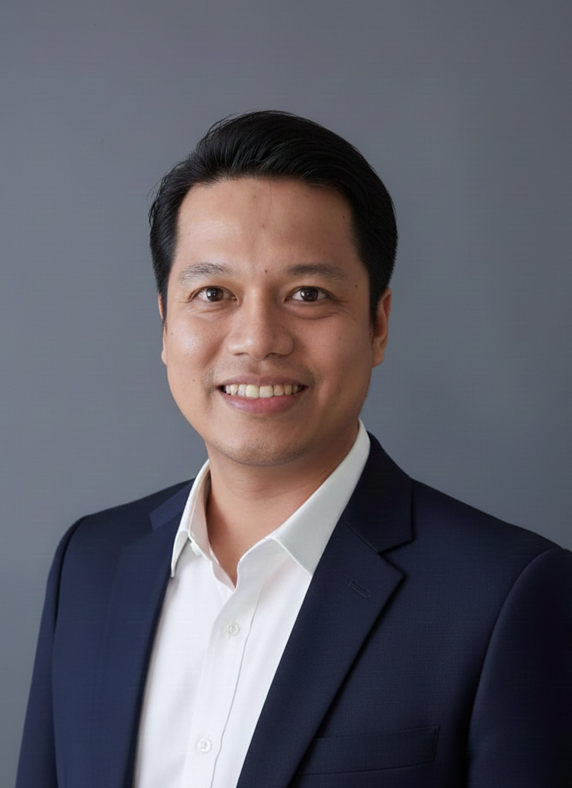
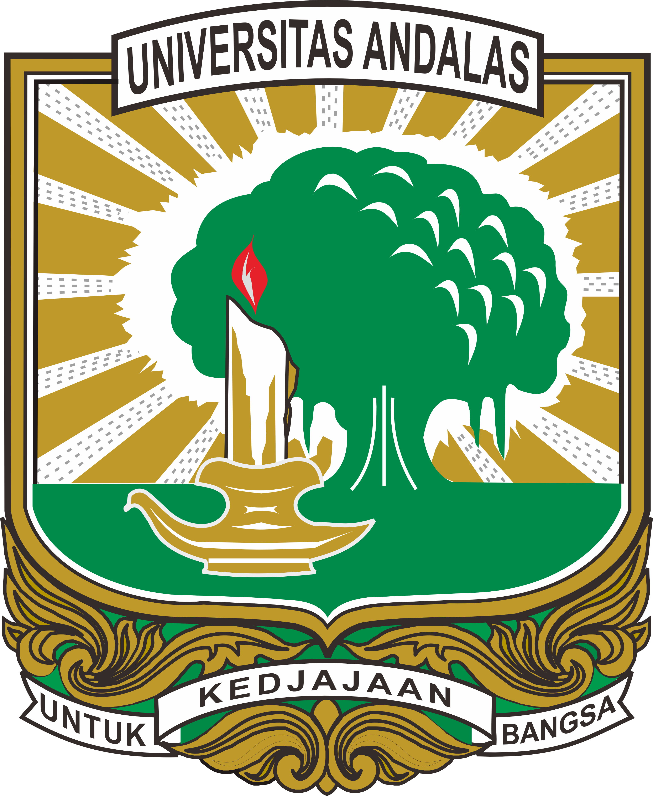
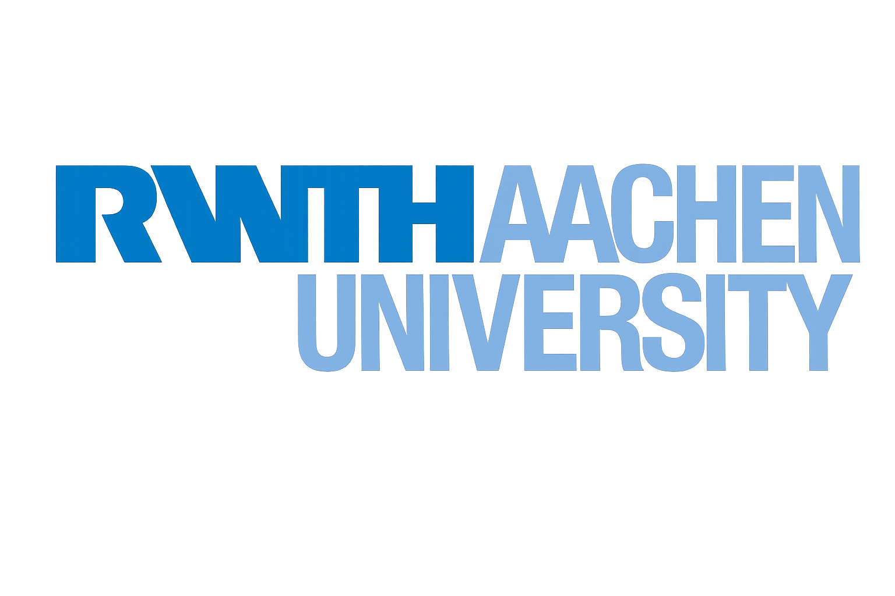

Ir. Ardhymanto Am Tanjung, Ph.D.
Engineer | Lecturer | Researcher
Universitas Negeri Padang | Mining Engineering Department

Engineer | Lecturer | Researcher
Universitas Negeri Padang | Mining Engineering Department
I am an Assistant Professor and researcher in Mining Engineering at Universitas Negeri Padang. My academic interests include mining engineering, underground excavation, sustainable mining materials, and applied geosciences. I am actively involved in research collaborations, scientific publications, and professional development activities.
I welcome opportunities for research collaboration, academic partnerships, and professional networking. Please feel free to contact me through the links provided below.
Ir. Ardhymanto Am Tanjung, Ph.D.
Mining Engineering Department
Universitas Negeri Padang
Email: ardhy@ft.unp.ac.id
King Abdulaziz University, 2026

Universitas Andalas, 2024

RWTH Aachen University, Germany, 2020
Universitas Negeri Padang
List research collaborators, universities, laboratories, industry partners, and international projects.